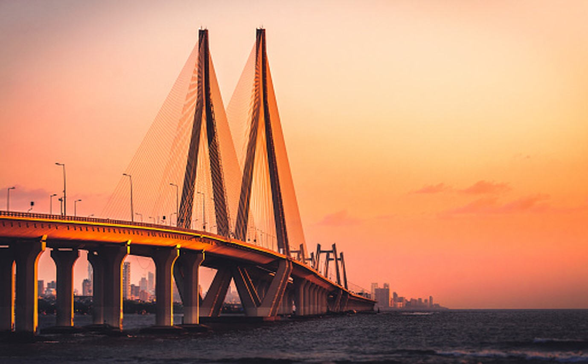
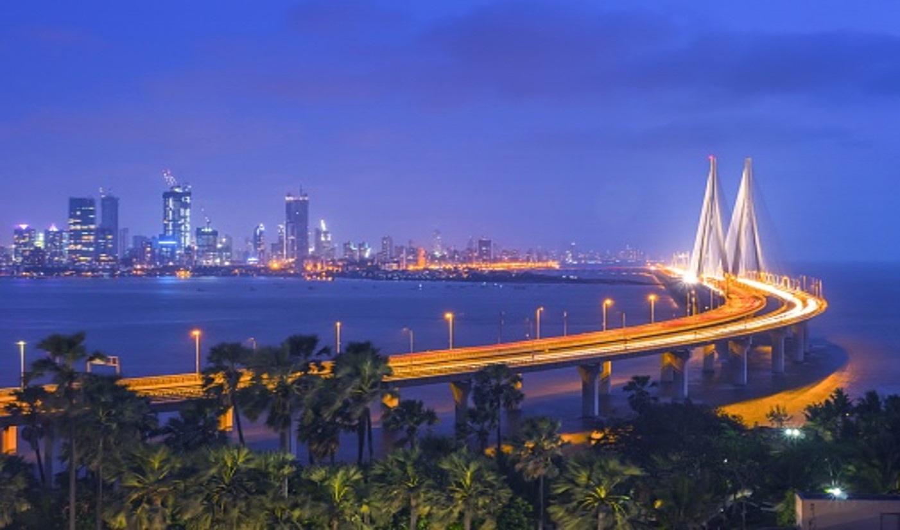

Worli Sea Face is a locality in South Mumbai, Maharashtra. It is one of the four peninsulas of Mumbai while the other being Colaba, Bandra and Malabar Hill. The sea connects it with Bandra via the Bandra-Worli Sea Link. Historic spellings include Warli, Worlee, Varli, and Varel. Originally Worli was a separate island, one of the Seven Islands of Bombay which were ceded by the Portuguese to England in 1661; it was linked up with the other islands in the 19th century.
Worli Sea Face is open 24 hours a day

